Ecosistema de software RENABOT
Renabot cuenta con un conjunto de herramientas de software diseñadas para facilitar la programación, configuración y uso del robot tanto desde un computador como desde un dispositivo móvil.
El ecosistema está compuesto principalmente por:
RENABOT Suite, la aplicación principal para computador.
RENABOT Mobile, la aplicación complementaria para dispositivos móviles.
Ambas herramientas permiten interactuar con Renabot de acuerdo con el tipo de actividad que se desee realizar.
Renabot Suite
RENABOT Suite es la aplicación de escritorio compatible con Linux y windows para trabajar con Renabot.
Desde esta aplicación el usuario puede acceder a diferentes herramientas para programar, simular, configurar y monitorear el robot.

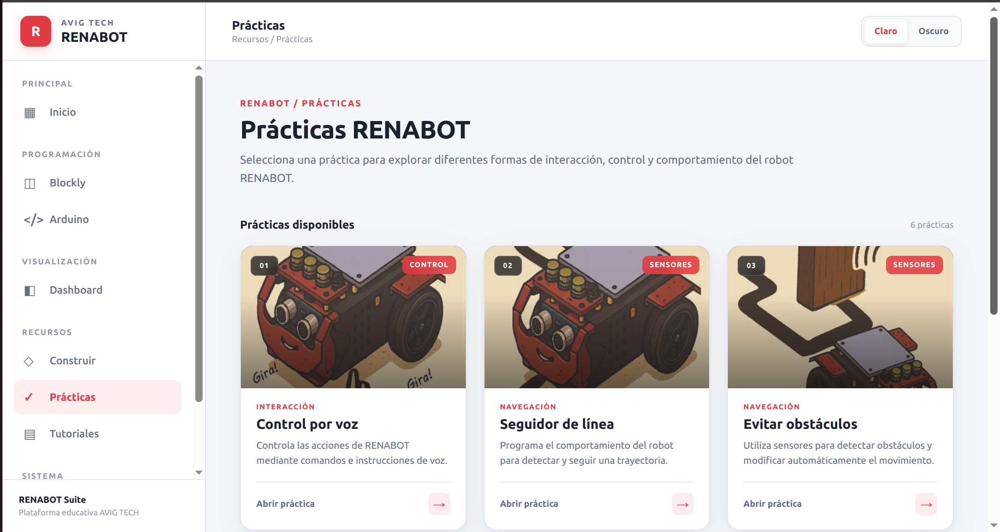
Programación con bloques
Renabot Suite incorpora un entorno de programación gráfica basado en bloques.
Este entorno permite crear programas desde actividades sencillas hasta algoritmos con lógica, sensores y estructuras de control.
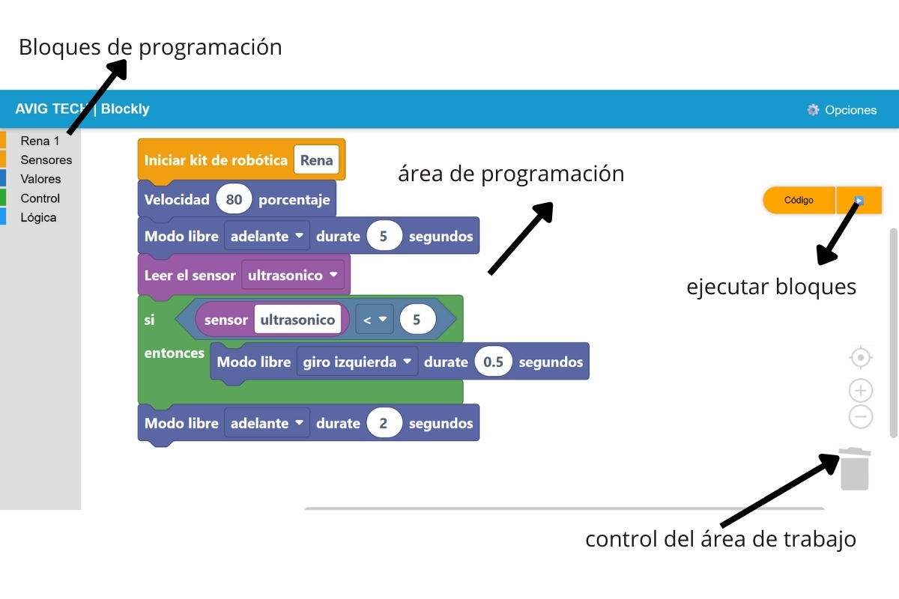
Descripción del programa:
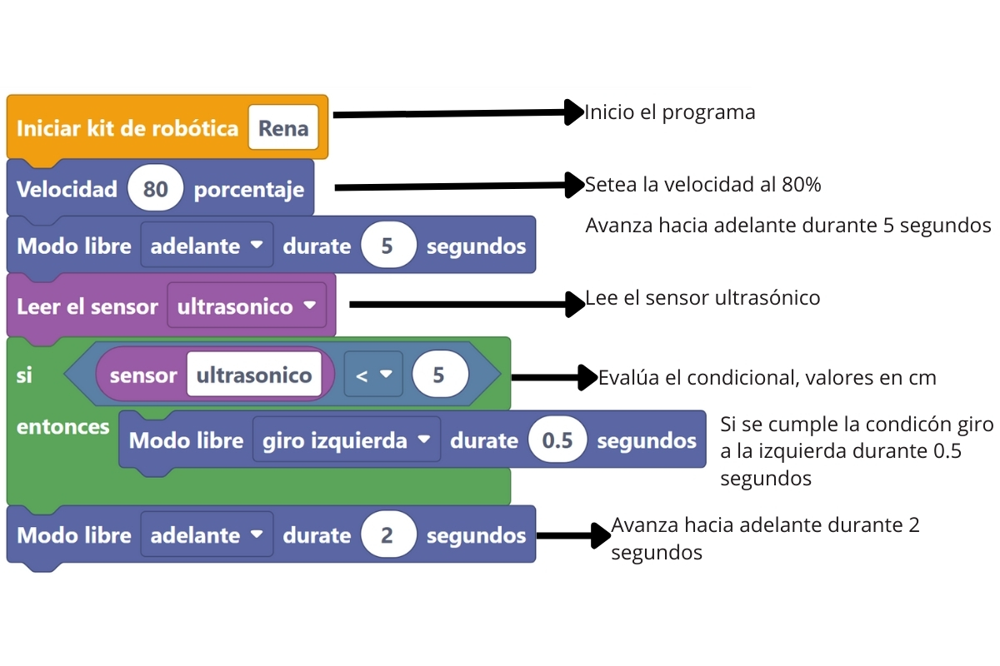
Bloques de programación del RENABOT
Los bloques personalizados permiten a los estudiantes activar el robot en diferentes modos y desarrollar algoritmos de forma visual e intuitiva.
Bloques Disponibles:
Bloque |
Descripción |
Clase |
|---|---|---|
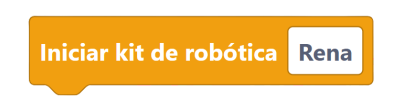 |
Este bloque permite el inicio del RENABOT. |
Rena |
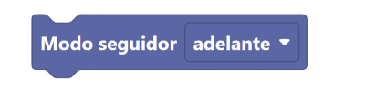 |
Controla el movimiento del RENABOT en la malla de movimiento controlado, los movimientos disponibles son: Adelante, Atras, Izquierda, Derecha. |
Rena |
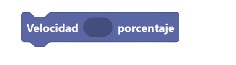 |
Setea el valor de la velocidad, usando un valor porcentual. El bloque permite valores enteros. |
Rena |
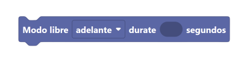 |
Controla el movimiento del robot durante una cantidad x de segundos, con este bloques el robot puede: Girar a la izquierda, Girar a la derecha, Avanzar o retroceder. El bloque admite valores decimales en el tiempo. |
Rena |
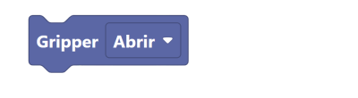 |
Abre o cierra el gripper. |
Rena |
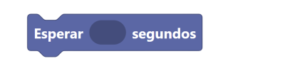 |
Envia una pausa en la ejecución del algoritmo durante una x cantidad de tiempo. El bloque acepta valores decimales. |
Rena |
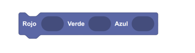 |
Enciende o apaga el LED del RENA-BOT |
Rena |
Enciende o apaga el LED del RENA-BOT |
Rena |
|
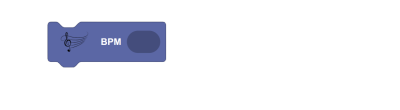 |
Setea el valor de Beats por minuto. |
Rena |
Setea el valor de Beats por minuto. |
Rena |
|
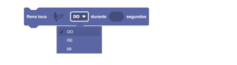 |
Toca una nota musical por determinando tiempo [s] |
Rena |
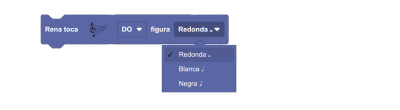 |
Toca una nota musical musical en base a una figura musical. |
Rena |
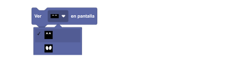 |
Muestra en la pantalla oled una imagen. |
Rena |
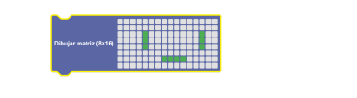 |
Crea una figura de 8 x 16 en la pantalla oled. |
Rena |
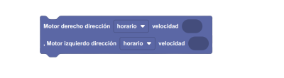 |
Controla la velocidad de los motores de forma independiente. |
Rena |
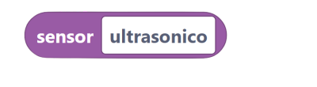 |
Variable asignada a cada sensor. |
Sensor |
Variable asignada a cada sensor. |
Sensor |
|
Bloque condicional IF, si la sentencia es verdadera se ejecutan los bloques agregados. |
Condicional |
|
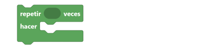 |
Bucle For, repite un n número de veces los diferentes bloques agregados. |
Condicional |
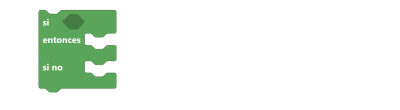 |
Bucle If / Else, si se cumple las condición realiza las acciones agregadas en el if, sino realiza las acciones agregadas en el else. |
Condicional |
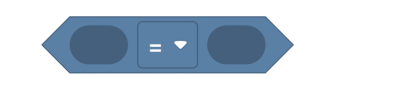 |
Compara 2 variables diferentes, los comparadores logicos disponibles son: |
Comparador |
Combina 2 o mas bloques comparadores. |
Comparador |
|
Ejecuta el bucle while |
Comparador |
|
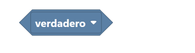 |
Devuelve una sentencia verdadera o falsa. |
Comparador |


Programación basada en Arduino
Renabot Suite también dispone de herramientas para trabajar con programación de la ESP32.
Este módulo está orientado a usuarios que desean avanzar desde la programación por bloques hacia el desarrollo de aplicaciones con microcontroladores.
Permite trabajar con conceptos como:
Entradas y salidas digitales.
Entradas analógicas.
Sensores.
Actuadores.
Servomotores.
Motores.
Variables.
Estructuras de control.
Visualización de sensores (Dashboard)
Renabot Suite permite visualizar la información generada por el robot mediante paneles gráficos.
Los datos de sensores pueden presentarse utilizando diferentes elementos de visualización, como:
Indicadores numéricos.
Gráficos de línea.
Gráficos de barras.
Indicadores tipo
gauge.
Esto facilita la observación del comportamiento del robot durante una práctica.
Actividades y recursos educativos
Renabot Suite también funciona como una herramienta de apoyo para el aprendizaje de robótica.
La aplicación puede incluir:
Prácticas guiadas.
Tutoriales.
Material de apoyo.
Guías de construcción.
Ejemplos de programación.
Recursos para docentes y estudiantes.
De esta forma, el usuario puede acceder desde una misma aplicación a las herramientas necesarias para construir, programar y experimentar con RENABOT.
Configuración de Renabot
Desde RENABOT Suite también se pueden realizar tareas de configuración y mantenimiento del robot.
Dependiendo del módulo utilizado, el usuario puede acceder a herramientas para:
Configurar la comunicación con RENABOT.
Verificar la conexión del robot.
Configurar dispositivos.
Guías de construcción
Utilizando modelos 3D del Renabot esta aplicación presenta un tutorial del armado de los diferentes modos de construcción del Renabot.
Pŕacticas
El Renabot tiene integrado 5 diferentes actividades programadas, que pueden ser utilizadas según la necesidad del curso o proyecto. Las actividades incluidas son:
Seguidor de línea
Notas musicales
Control manual
Control por voz
Andamiaje Robótico
Funcionamiento sin Internet
Las principales herramientas de RENABOT Suite están diseñadas para funcionar de manera local.
Esto permite utilizar, todos los recursos sin depender permanentemente de una conexión a Internet.
RENABOT Mobile
RENABOT Mobile es la aplicación complementaria para teléfonos y tabletas.
Su objetivo es permitir una interacción rápida con RENABOT sin necesidad de utilizar un computador.
La aplicación está orientada principalmente al programación y realización de actividades sencillas con el Renabot.
La aplicación móvil incluye:
Programación por bloques.
Tutoriales de construcción.
Configuración del robot.
Prácticas.
RENABOT Suite y RENABOT Mobile
Las dos aplicaciones se complementan entre sí.
RENABOT Suite está orientado al desarrollo completo de proyectos de robótica, mientras que RENABOT Mobile facilita la interacción rápida con el robot.
De forma general:
Función |
Renabot Suite |
Renabot Móvil |
|---|---|---|
Programación por bloques |
✓ |
✓ |
Control del robot |
✓ |
✓ |
Visualización de sensores |
✓ |
Parcial |
Programación ESP32 |
✓ |
x |
Tutoriales y Actividades educativas |
✓ |
x |
Prácticas |
✓ |
x |
Además, el Renabot es compatible con múltiples lenguajes y entornos de programación, lo que lo convierte en una plataforma flexible para el aprendizaje de la robótica. Puede ser utilizado con:
Arduino IDE (C/C++).
Espressif IDE para desarrollos avanzados en ESP32.
MicroPython, orientado a programación ágil y didáctica.
Blockly, con bloques gráficos diseñados específicamente para simplificar la programación educativa.
De esta manera, los estudiantes y docentes pueden elegir el entorno que mejor se adapte a su nivel y objetivos de aprendizaje.